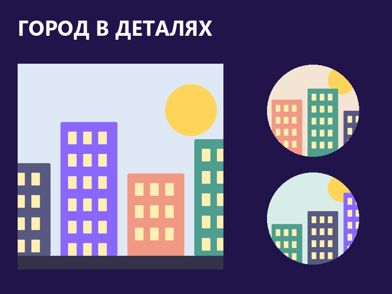
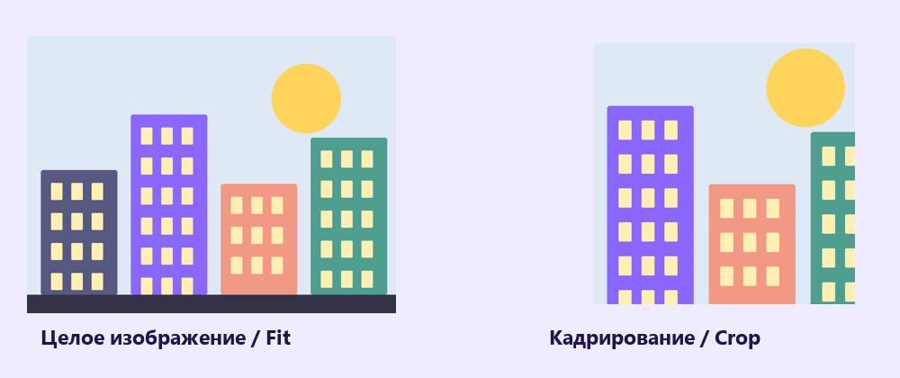
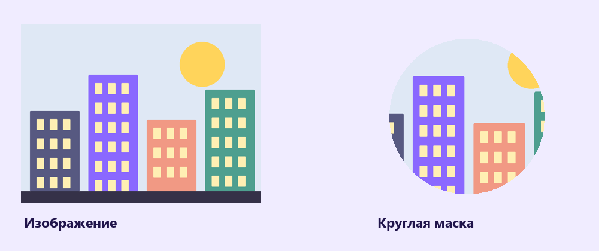

Изображения и маски
Размести растровые изображения, выбери видимую часть и собери коллаж в прямоугольных и круглых окнах.
Перейти к заданию ↗
Перед новой практикой
Три небольших вопроса по предыдущему уроку. Выбери ответ и нажми «Проверить».
Клавиши для практики
Сочетания для Windows. Переключи клавиатуру на английскую раскладку. Перед командой заверши ввод текста.
Поместить изображение
Place image (поместить изображение) добавляет PNG или JPG. Выбери файл, затем щёлкни или протяни область на холсте. У изображения появляется слой с Image fill (заливка изображением). В шаблоне уже лежат три готовые растровые иллюстрации города.

Растровую иллюстрацию можно разместить в прямоугольной области.
Попробуй в Figma
Fill, Fit и Crop
Fill (заполнить) закрывает область целиком и может обрезать края изображения. Fit (вписать) показывает всё изображение, иногда оставляя свободные полосы. Crop (кадрировать) позволяет выбрать видимую часть. Пропорции исходного изображения сохраняй, чтобы объекты не вытягивались.

В Fill края могут уйти за рамку. Fit сохраняет изображение целиком.
Попробуй в Figma
Маска задаёт видимую область
Маска показывает часть изображения внутри своей формы. Нарисуй круг и помести его ниже изображения в Layers. Выдели круг и изображение, затем выбери Use as mask. Появится Mask group (группа маски). Внутри неё изображение можно двигать отдельно от круга.

Круг задаёт границу, изображение остаётся отдельным слоем внутри Mask group.
Попробуй в Figma
Коллаж «Город в деталях»
Собери коллаж «Город в деталях» из готовых растровых иллюстраций. Покажи одну большую деталь и две небольшие, добавь короткое название.
В Figma нажми на название файла и выбери Duplicate to drafts (создать копию в черновиках). Работай в собственной копии. Инструкции и образцы заблокированы.


Проверь свою работу
Отмечай пункты после проверки в Figma.
Если закончил раньше
Попробуй маску другой формы. Выбери такую деталь изображения, которая хорошо читается внутри неё.